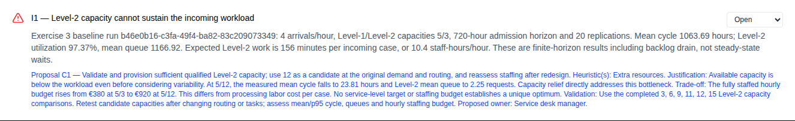
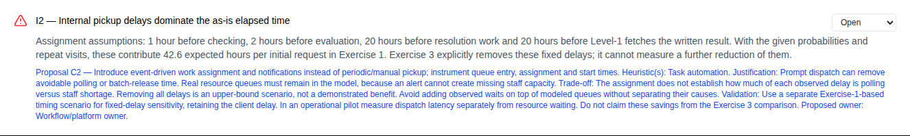
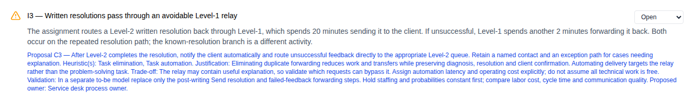
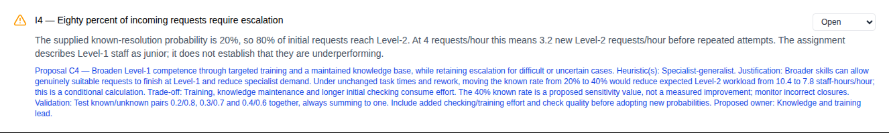
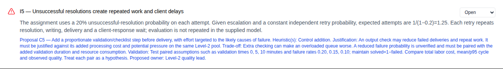
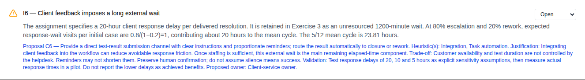

Exercise 4 — Issue register and proposed redesign
Six evidence-backed issues, six linked proposals, and an explicit justification and validation plan for each. The register is saved in BpmnGo under the Exercise 3 project, with manual issue codes EX4_I1–EX4_I6.
How the exercise was completed
- Read the original process and assumptions from the assignment, then inspect the completed Exercise 3 baseline and staffing comparisons.
- Separate evidence from the statement, measured simulation outcomes, calculated implications, and proposed improvements.
- Create the six issues below, each with an evidence statement and a proposal containing the heuristic, justification, trade-off, validation plan and proposed owner.
- Save the complete entries through BpmnGo's issue API. The current UI can add a title and change status, but cannot edit all the detailed fields.
- Open the Issues tab and verify every entry after reloading the browser. The six entries remain open: the proposals have not been implemented.
The Exercise 3 configuration, completed campaigns and pre-existing automatic issues were preserved. Manual entries have no automatic source-run association, so later automatic issue refreshes do not replace them; the evidence explicitly records the relevant run IDs.
Evidence boundaries
Exercise 1: the original fixed internal delays are retained. Exercise 3: those delays are removed, while resource queues arise from finite capacity and the client-response delay stays at 20 hours. Their benefits cannot be counted twice.
The 5/3 baseline's 1063.69-hour mean cycle includes backlog drain after arrivals stop. The 5/12 comparison gives 23.81 hours under the same finite-horizon methodology. These are modeled outcomes, not observations from a real operating desk.
The priority/severity labels and proposed owners below are analyst judgments. Lower failure rates, greater first-level resolution and faster client replies are hypotheses to test, not achieved results.
I1 — Level-2 capacity cannot sustain the incoming workload
HIGH · OPEN · Proposed owner: Service desk manager
Evidence
Exercise 3 baseline run b46e0b16-c3fa-49f4-ba82-83c209073349: 4 arrivals/hour, Level-1/Level-2 capacities 5/3, 720-hour admission horizon and 20 replications. Mean cycle 1063.69 hours; Level-2 utilization 97.37%, mean queue 1166.92. Expected Level-2 work is 156 minutes per incoming case, or 10.4 staff-hours/hour. These are finite-horizon results including backlog drain, not steady-state waits.
Proposed change C1
Validate and provision sufficient qualified Level-2 capacity; use 12 as a candidate at the original demand and routing, and reassess staffing after redesign.
Redesign heuristic(s): Extra resources. Heuristic terminology reference.
Why this addresses the issue
Available capacity is below the workload even before considering variability. At 5/12, the measured mean cycle falls to 23.81 hours and Level-2 mean queue to 2.25 requests. Capacity relief directly addresses this bottleneck.
Trade-off and uncertainty
The fully staffed hourly budget rises from €380 at 5/3 to €920 at 5/12. This differs from processing labor cost per case. No service-level target or staffing budget establishes a unique optimum.
How to validate
Use the completed 3, 6, 9, 11, 12, 15 Level-2 capacity comparisons. Retest candidate capacities after changing routing or tasks; assess mean/p95 cycle, queues and hourly staffing budget.
View this entry in BpmnGo

I2 — Internal pickup delays dominate the as-is elapsed time
HIGH · OPEN · Proposed owner: Workflow/platform owner
Evidence
Assignment assumptions: 1 hour before checking, 2 hours before evaluation, 20 hours before resolution work and 20 hours before Level-1 fetches the written result. With the given probabilities and repeat visits, these contribute 42.6 expected hours per initial request in Exercise 1. Exercise 3 explicitly removes these fixed delays; it cannot measure a further reduction of them.
Proposed change C2
Introduce event-driven work assignment and notifications instead of periodic/manual pickup; instrument queue entry, assignment and start times.
Redesign heuristic(s): Task automation. Heuristic terminology reference.
Why this addresses the issue
Prompt dispatch can remove avoidable polling or batch-release time. Real resource queues must remain in the model, because an alert cannot create missing staff capacity.
Trade-off and uncertainty
The assignment does not establish how much of each observed delay is polling versus staff shortage. Removing all delays is an upper-bound scenario, not a demonstrated benefit. Avoid adding observed waits on top of modeled queues without separating their causes.
How to validate
Use a separate Exercise-1-based timing scenario for fixed-delay sensitivity, retaining the client delay. In an operational pilot measure dispatch latency separately from resource waiting. Do not claim these savings from the Exercise 3 comparison.
View this entry in BpmnGo

I3 — Written resolutions pass through an avoidable Level-1 relay
MEDIUM · OPEN · Proposed owner: Service desk process owner
Evidence
The assignment routes a Level-2 written resolution back through Level-1, which spends 20 minutes sending it to the client. If unsuccessful, Level-1 spends another 2 minutes forwarding it back. Both occur on the repeated resolution path; the known-resolution branch is a different activity.
Proposed change C3
After Level-2 completes the resolution, notify the client automatically and route unsuccessful feedback directly to the appropriate Level-2 queue. Retain a named contact and an exception path for cases needing explanation.
Redesign heuristic(s): Task elimination, Task automation. Heuristic terminology reference.
Why this addresses the issue
Eliminating duplicate forwarding reduces work and transfers while preserving diagnosis, resolution and client confirmation. Automating delivery targets the relay rather than the problem-solving task.
Trade-off and uncertainty
The relay may contain useful explanation, so validate which requests can bypass it. Assign automation latency and operating cost explicitly; do not assume all technical work is free.
How to validate
In a separate to-be model replace only the post-writing Send resolution and failed-feedback forwarding steps. Hold staffing and probabilities constant first; compare labor cost, cycle time and communication quality.
View this entry in BpmnGo

I4 — Eighty percent of incoming requests require escalation
MEDIUM · OPEN · Proposed owner: Knowledge and training lead
Evidence
The supplied known-resolution probability is 20%, so 80% of initial requests reach Level-2. At 4 requests/hour this means 3.2 new Level-2 requests/hour before repeated attempts. The assignment describes Level-1 staff as junior; it does not establish that they are underperforming.
Proposed change C4
Broaden Level-1 competence through targeted training and a maintained knowledge base, while retaining escalation for difficult or uncertain cases.
Redesign heuristic(s): Specialist-generalist. Heuristic terminology reference.
Why this addresses the issue
Broader skills can allow genuinely suitable requests to finish at Level-1 and reduce specialist demand. Under unchanged task times and rework, moving the known rate from 20% to 40% would reduce expected Level-2 workload from 10.4 to 7.8 staff-hours/hour; this is a conditional calculation.
Trade-off and uncertainty
Training, knowledge maintenance and longer initial checking consume effort. The 40% known rate is a proposed sensitivity value, not a measured improvement; monitor incorrect closures.
How to validate
Test known/unknown pairs 0.2/0.8, 0.3/0.7 and 0.4/0.6 together, always summing to one. Include added checking/training effort and check quality before adopting new probabilities.
View this entry in BpmnGo

I5 — Unsuccessful resolutions create repeated work and client delays
HIGH · OPEN · Proposed owner: Level-2 quality lead
Evidence
The assignment uses a 20% unsuccessful-resolution probability on each attempt. Given escalation and a constant independent retry probability, expected attempts are 1/(1−0.2)=1.25. Each retry repeats resolution, writing, delivery and a client-response wait; evaluation is not repeated in the supplied model.
Proposed change C5
Add a proportionate validation/checklist step before delivery, with effort targeted to the likely causes of failure.
Redesign heuristic(s): Control addition. Heuristic terminology reference.
Why this addresses the issue
An output check may reduce failed deliveries and repeat work. It must be justified against its added processing cost and potential pressure on the same Level-2 pool.
Trade-off and uncertainty
Extra checking can make an overloaded queue worse. A reduced failure probability is unverified and must be paired with the added validation duration and resource consumption.
How to validate
Test paired assumptions such as validation times 0, 5, 10 minutes and failure rates 0.20, 0.15, 0.10; maintain solved=1−failed. Compare total labor cost, mean/p95 cycle and observed quality. Treat each pair as a hypothesis.
View this entry in BpmnGo

I6 — Client feedback imposes a long external wait
MEDIUM · OPEN · Proposed owner: Client-service owner
Evidence
The assignment specifies a 20-hour client response delay per delivered resolution. It is retained in Exercise 3 as an unresourced 1200-minute wait. At 80% escalation and 20% rework, expected response-wait visits per initial case are 0.8/(1−0.2)=1, contributing about 20 hours to the mean cycle. The 5/12 mean cycle is 23.81 hours.
Proposed change C6
Provide a direct test-result submission channel with clear instructions and proportionate reminders; route the result automatically to closure or rework.
Redesign heuristic(s): Integration, Task automation. Heuristic terminology reference.
Why this addresses the issue
Integrating client feedback into the workflow can reduce avoidable response friction. Once staffing is sufficient, this external wait is the main remaining elapsed-time component.
Trade-off and uncertainty
Customer availability and test duration are not controlled by the helpdesk. Reminders may not shorten them. Preserve human confirmation; do not assume silence means success.
How to validate
Test response delays of 20, 10 and 5 hours as explicit sensitivity assumptions, then measure actual response times in a pilot. Do not report the lower delays as achieved benefits.
View this entry in BpmnGo

Suggested order of implementation
- C1: validate capacity and protect service continuity. The staffing experiment already demonstrates a material bottleneck under the original assumptions. Review a feasible staffing envelope and cost before committing to hiring.
- C2: instrument dispatch and reduce avoidable pickup delay. Establish where time is actually lost, then automate the relevant assignment/notification steps.
- C3: simplify the resolution relay. Pilot direct delivery and feedback routing with an exception path and an accountable owner.
- C4: expand first-level capability. Use recurrent case types to target training and knowledge-base content, then measure the resulting escalation rate and work added at Level-1.
- C5: test proportionate output validation. Add a measurable check and assess whether fewer retries compensate for the extra work.
- C6: improve client feedback collection. Pilot the portal/reminder flow and measure response delay. This can proceed alongside C3 if both use the same communication channel.
After C3–C6 change the work or routing, recompute staffing. The capacity justified for the original process is not automatically the capacity needed for the redesigned one.
Carry these proposals into Exercise 5
A coherent first to-be model can use C2, C3 and C6: retain Level-1 checking and Level-2 diagnosis, evaluation and writing; deliver the prepared resolution through an automated notification; collect client confirmation directly; close confirmed successes and route failures directly to Level-2. Keep an exception route where human explanation is needed.
Test C4 and C5 as additional variants instead of assuming simultaneous gains. Preserve original branching probabilities until a clearly labeled sensitivity scenario or observed data justifies changing them. A capacity change is a resource configuration decision; it does not by itself require extra parallel BPMN branches.
Exercise 4 is complete at the issue-and-proposal stage. No to-be process model or unmeasured improvement is presented as already implemented.
Reproduce the full-detail entry through BpmnGo
The saved register uses POST /engine-rest/simulation/scenarios/{scenarioId}/issues with the normal authenticated session. Each entry has code, title, elementId, category, severity, status, evidence and suggestion. The suggestion contains the heuristic and justification because the current schema has no separate heuristic field. The structured JSON and CSV exports also retain those components as separate fields.
To view the completed work without creating duplicates, open the project and select Issues. Look for I1–I6; the automatic detected issues may also appear. Each manual entry remains Open until evidence supports accepting, dismissing or resolving it.
Sources and traceability
- Assignment 2 (1).pdf: process narrative and Exercises 1–5, especially pp. 1–2.
- Assignment 2 (1).bpmn: supplied routing, activities and rework loop.
- Exercise 3 baseline run:
b46e0b16-c3fa-49f4-ba82-83c209073349. - Exercise 3 comparison run:
01d1074d-01a0-4e6a-b86b-7b7df033862f. - Exercise 3 factorial run:
c22fa1da-b5c4-4f34-b204-ec904fb7bb27. - Heuristic terminology: Reijers and Limam Mansar (2005), original paper hosted by the author.